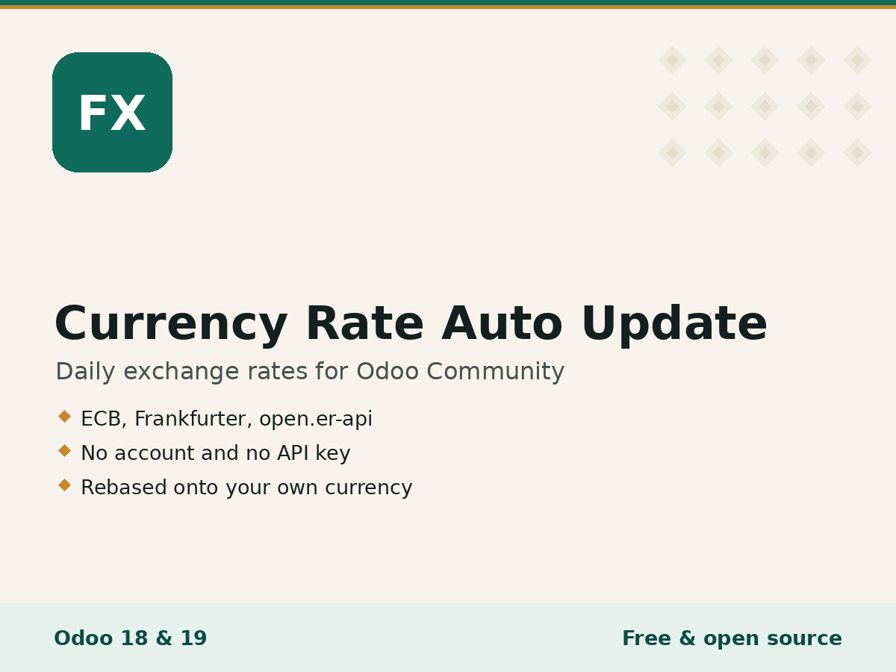
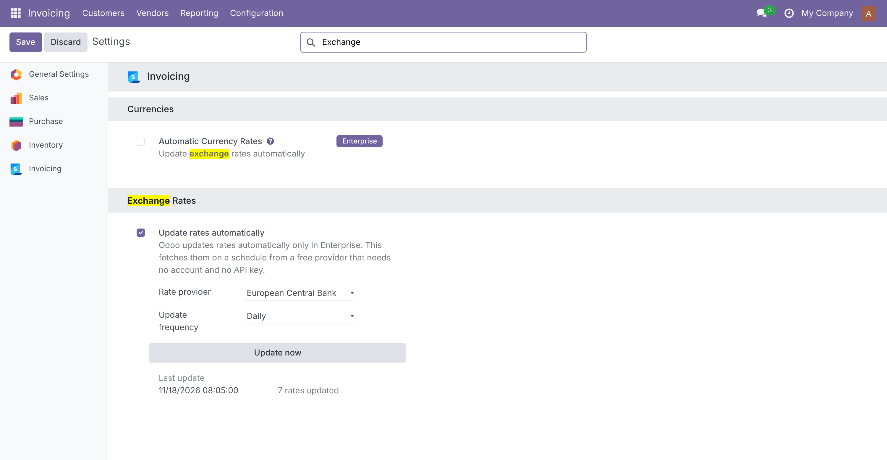
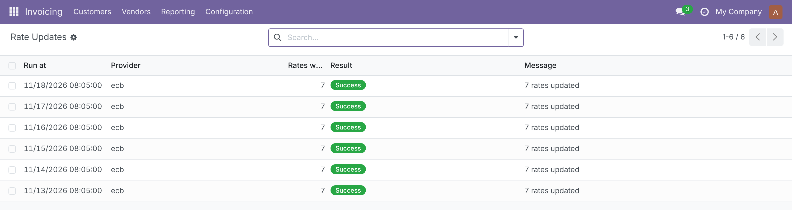
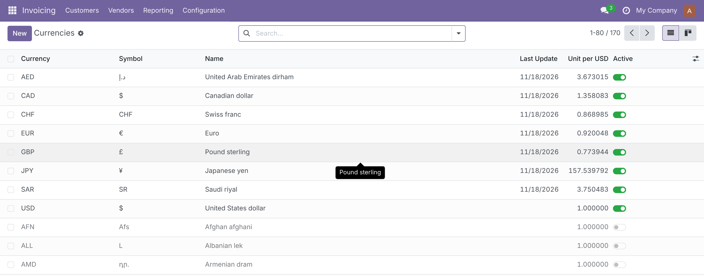

Automatic daily exchange rates for Odoo Community, from free providers that need no account and no API key.
Automatic rate updates ship with Odoo Enterprise. On Community there is nothing, so every company running more than one currency either types rates in by hand each morning or quietly lets them drift. A stale rate is not a cosmetic problem: it goes into the invoice, the stock valuation, the unrealised gain and every report that touches a foreign currency.
The European Central Bank daily reference rates, the Frankfurter mirror with a JSON API, and the open.er-api dollar feed. All three are free to use and none of them asks you to register. Pick one per company and switch if it ever goes quiet.
Providers publish against their own base. The ECB quotes everything against the euro; most JSON feeds quote against the dollar. Odoo stores a rate as units of the foreign currency per one unit of your company's currency.
So if your company runs in dollars and a euro based feed is written in unchanged, Odoo ends up holding pounds per euro and labelling it pounds per dollar. Every conversion is then wrong by the EUR/USD rate, and nothing about it looks broken on screen.
This module divides every quote through by your own currency's rate, so the whole set is rebased onto your company currency whatever base it arrived in. There is a test that proves it through Odoo's own converter.
Only the currencies you useWrites rates for the currencies you have activated, not the whole ISO list. No hundreds of unread rows per day. |
One row per dayA second run on the same date updates the existing rate instead of appending another, so the rate table stays readable. |
A failure never damages good ratesIf the provider is down the run is logged and skipped. The rates you already have are left exactly as they were. |
You can see it workingA log row for every run. A provider that quietly started failing three weeks ago is visible, instead of surfacing at month end. |
Multi-companyEach company picks its own provider and frequency, and rates are written against that company's own currency. |
Sensible retriesA company whose last run failed is retried on the next cron rather than waiting out a weekly or monthly interval. |
Install, then go to Accounting, Configuration, Settings, Exchange Rates. Switch it on, choose a provider and a frequency, and press Update now to confirm it works. A daily scheduled action does the rest. The run history is under Accounting, Configuration, Rate Updates.
LGPL-3. Source on GitHub, issues and pull requests welcome. Maintained by Mohammad Najjarine.
Odoo's own Automatic Currency Rates is greyed out with an Enterprise badge on a Community database. Underneath it is this module's own setting, switched on, pulling from the European Central Bank once a day. No account, no API key.

Each update is logged with when it ran, which provider answered, how many rates it wrote and whether it worked. When a rate looks wrong, the first question is whether the fetch ran at all, and this answers it without opening the scheduled actions.

Seven active currencies carrying the same update date, with the rate against the company currency. Inactive currencies are left alone, so the run stays small and quick however many currencies the database happens to know about.

Written and maintained by Mohammad Najjarine, Odoo consultant. Questions, bug reports and customisation requests are answered.
Message me on WhatsApp Code and issues on GitHub
Phone and WhatsApp +961 71 835279